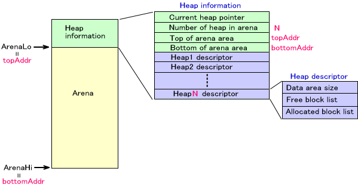

(In the image of the memory map shown on this page, the "lower address" is at the top of the image, and the "upper address" is at the bottom.)
The TWL-SDK allows you to build a heap system in the arena. You can use the heap system to allocate and release memory blocks for in-game use. When the OS_InitArena function initializes the arena, the ArenaLo pointer is inserted at the front end of the region, and the ArenaHi pointer is inserted at the tail end of the region.
A memory allocation system can be built for each of multiple arenas. In addition, multiple heap regions can be configured for a single arena.
For an arena in the state shown in the preceding figure, calling the OS_InitAlloc function to initialize the memory allocation system results in the creation of a heap information block at the bottom of the memory region, as shown in the figure below. Up to this point, this memory block was an unallocated arena region. Using the OS_InitiAlloc return value, the arena's boundary address, ArenaLo, only needs to move by the size of the information block.
The maximum number of heaps that can be created in a single arena must be specified as an argument of the OS_InitAlloc function because heap descriptors equal to this maximum number are created in the heap information block as part of the initialization process. The reason for this is that this maximum number of heap descriptors is created in advance in the block information of the heap. As shown in the figure, the heap descriptors store information about the size of the heap regions, the start of free blocks, and the starting addresses of blocks in use.

To clear memory allocation system information, call the OS_ClearAlloc function.
Call the OS_CreateHeap function to create a new heap. Specify the region to use for the heap using the start and end arguments. The specified region must be in the range from topAddr to bottomAddr in the diagram.
The heap information is stored in the heap descriptor.
Call the OS_DestroyHeap function to destroy created heaps. This does not change the pointers ArenaLo and ArenaHi.
Call the OS_ClearHeap function to reinitialize a heap.
You can set current heap for each arena. By setting the current heap, it is no longer necessary to specify heap handlers using several macro functions. It also becomes possible to specify heap with OS_CURRENT_HEAP_HANDLE, even though it is a tool for specifying heap handles.
The OS_SetCurrentHeap function sets the current heap.
After creating a heap, it is possible to extend the heap region. Call the OS_AddToHeap function using the heap argument to specify the heap you want extended.
Do not use the extended heap region for another purpose until you release the heap.
When using OS_AddToHeap, heap "enclaves" may occur, as illustrated below.
The OS_AllocFromHeap function allows you to allocate memory blocks from the specified heap. For this function, you must also specify the arena.
For the sake of simplicity, a macro is provided that includes the arena name in the function name. For details, see OS_AllocFromHeap.
Also, the OS_AllocFixed function allows you to allocate memory blocks from a specified region. A memory block allocated with this function is excluded from heap control. Therefore, it is acceptable to take a memory block allocated with this function as an argument and extend another heap with the OS_AddToHeap function.
The OS_FreeToHeap function allows you to release allocated memory blocks. For this function, you must also specify the arena.
For the sake of simplicity, a macro is provided that includes the arena name in the function name. For details regarding this macro, see the reference materials for OS_FreeToHeap.
Also, the OS_FreeAllToHeap function allows you to release all memory blocks. Here, too, a macro is provided that includes arena name in function name. For details regarding this macro, see OS_FreeAllToHeap.
Within heaps, both free memory and used memory are controlled in block units. These block units are linked with a bidirectional list. After creating a heap, all regions for the heap are considered free blocks.
The size of the data area includes the region allocated for the heap. With normal use, this value does not change. However, calling the OS_AllocFixed function reduces the size of that block amount in heaps that include the specified region. Also, the size of that block amount increases when you add memory blocks that were not originally included in this heap by calling the OS_AddToHeap function.
The following diagram shows the heap and heap descriptor state at a point in time. In this example, when FreeBlockList reaches addr1 and then follows the next link, it becomes clear that addr1 and the block that starts from addr5 and addr3 are empty regions. In the same way, by following Allocated Block List, it becomes clear that the block that starts from addr2, addr4, and addr6 is in use.
The following functions are available.
OS_GetTotalAllocSize gets the total size of the memory block (not including the header size) being used.
OS_GetTotalOccupiedSize gets the total size of the memory block (including the header size) being used.
OS_GetTotalFreeSize gets the total size of the free memory block.
OS_GetMaxFreeSize gets the size of the largest free memory block.
OS_ReferentSize specifies a memory block and then gets the size of that block.
These functions only take into account parts where memory block data is stored. In other words, the size of the part that controls memory is not included. Even though these are functions that get the totals, that total is only the data region part.

OS_DumpHeap displays heap contents using OS_Printf. This function is used for debugging.
Also, OS_CheckHeap checks the validity of the heap contents.
On the TWL ROM (both hybrid ROM and limited ROM), the bottom 16 KB (0x02000000 to 0x02004000) of the main memory is reserved as a system region and programs are located after 0x02004000. This region is used only when operating in TWL mode, but when operating in NITRO mode, it is not used.
Therefore, as long as the hybrid ROM is operating in NITRO mode, this 16 KB can be used freely.
It can be used however you like, such as a thread stack region or as data buffer, but the OS_CreateExtraHeap function is available so that this region can be used as an independent heap, as one other use.
Note that a 16-KB region can be added as a free region to be an enclave for different heaps that already exist. In such a case, use the OS_AddToHeap function. This is the OS_AddToHeap function wrapper, but the OS_AddExtraHeapToHeap function is a convenient function that is available so that the starting and ending addresses do not need to be specified.
In either case, this is valid only when a hybrid ROM is operating in NITRO mode.
OS Function List (Arena)
OS Function List (Alloc)
2009/04/03 Added special heap for the top region of the main memory.
2005/10/07 Added the OS_GetTotalOccupiedSize function.
2005/03/14 Corrected mistakes in the link.
2005/03/03 Corrected mistakes in the link.
2004/12/13 Corrected terms and word endings.
2004/10/26 Initial version.
CONFIDENTIAL